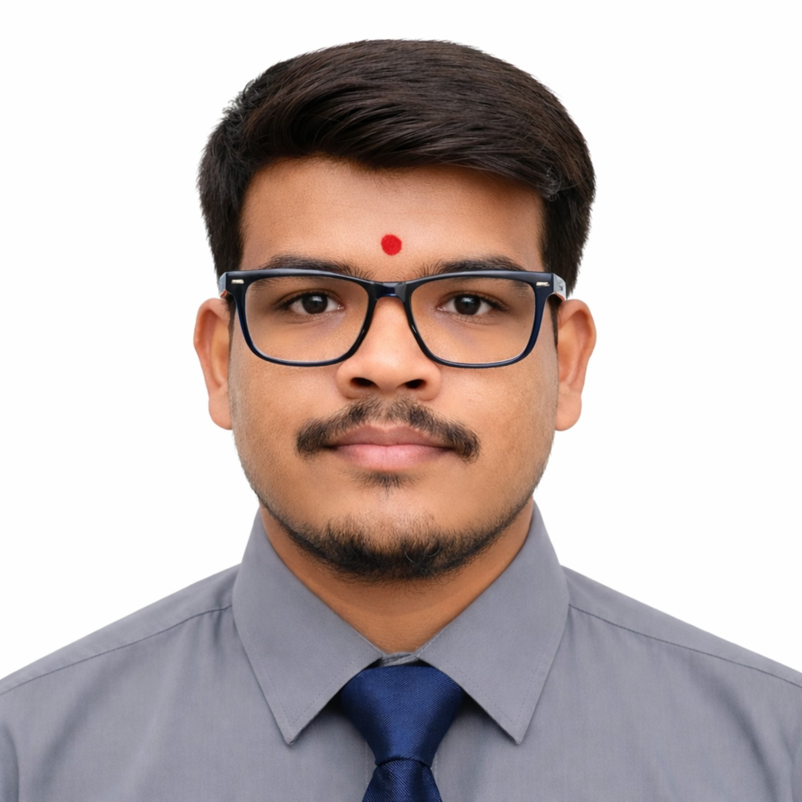

Areas of interest
Software development, AI applications, computer vision, automation, backend APIs, and useful digital experiences.
Computer Engineering student building practical solutions across software development, AI, and computer vision. I enjoy turning ideas into useful applications through code, experimentation, and continuous learning.
Explore my work ↓Contact me ↗📍 Thane, Maharashtra · B.E. Computer Engineering (2023–2027)

I’m pursuing a B.E. in Computer Engineering at Terna Engineering College, Mumbai University. My experience spans AI and computer vision internship work, data analytics, and academic software projects. I’m interested in opportunities where I can contribute, learn from a team, and grow as a software developer.
Software development, AI applications, computer vision, automation, backend APIs, and useful digital experiences.
Curiosity, structured problem-solving, teamwork, adaptability, and learning through hands-on implementation.
Worked on AI and computer vision solutions, including image/video processing, data annotation, object detection, dataset preparation, and CCTV video analytics using Python, OpenCV, and YOLOv8.
Performed data cleaning, exploratory data analysis, statistical analysis, and data visualization on structured datasets; worked on predictive analytics case studies.
Selected academic and practical projects based on my resume and project work.
Developing a Python-based image classification system with an automated reporting module for structured diagnostic output.
Developed a software-based OMR evaluation system using Python and image processing, reducing hardware dependency. Resume notes batch processing of 50+ sheets.
Academic project focused on coordinating disaster-relief information and support through a web-based platform.
Experience building frontend interfaces and connecting application workflows with backend APIs and database services through project work.
Terna Engineering College · Mumbai University
2023–2027 · Nerul, Navi Mumbai
TechTashan – Smart Solutions Hackathon · Team Techtoniqs · Organized by Team Vertex (CSBS Department), Bharati Vidyapeeth · March 2026.
CodePrix 1.0 Hackathon · K. J. Somaiya Institute of Technology · April 2026.
Oracle Cloud Infrastructure 2025 AI Foundations Associate; Oracle Cloud Infrastructure 2025 Data Science Professional; IIT Bombay Computer Training; Deloitte Virtual Internship — Cyber, Technology & Data Analytics.
Analytical reasoning · Leadership mindset · Team collaboration · Adaptability · Communication in English, Hindi, and Marathi.
Open to learning opportunities, internships, and entry-level software development roles.